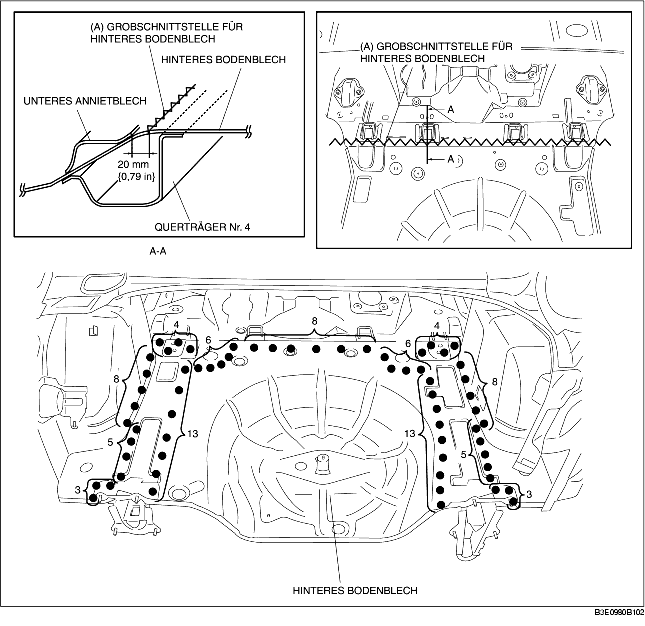

HINTERES BODENBLECH AUSBAUEN
B3E098053750B01
1. Bereich (A) grob vorschneiden.
-
Achtung
-
• Beim groben Vorschneiden von Bereich (A) 20 mm {0,79 in} vom Flansch (in Richtung Rückseite) entfernt an der Rückseite des unteren Annietblechs schneiden.
2. Das hintere Bodenblech ausbauen.
